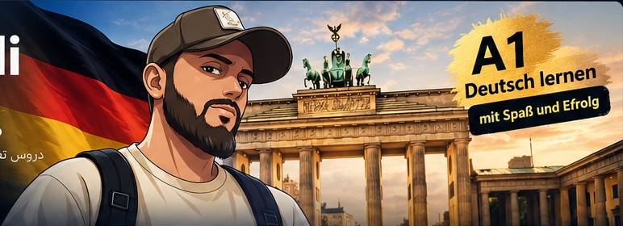

🎧 الاستماع
استمع للنص الألماني، أعده ببطء، ثم أجب عن أسئلة الفهم.
منهج متدرّج يضم القواعد والمفردات والقراءة والاستماع والكتابة والمحادثة، مع تمارين متنوعة وتصحيح فوري وتحضير تدريبي لامتحانات A1.

ابدأ بالتسلسل، وراجع المفردات والقواعد باستمرار.
دروس قصيرة تتضمن أهدافاً ومفردات وقاعدة ونصاً وتمارين.
كل مهارة لها قسم مستقل داخل المنصة.
استمع للنص الألماني، أعده ببطء، ثم أجب عن أسئلة الفهم.
نماذج تدريبية للرسائل والإيميلات والطلبات والاعتذار والدعوات.
اختبر مهارات Hören وLesen وSchreiben وSprechen.
12 وحدة منظمة من التعارف إلى مواقف الحياة اليومية.
ابحث بالألمانية أو بالعربية واستمع إلى النطق.
شرح مبسّط مع أمثلة وتمارين قصيرة.
التسجيل هنا يُقرأ بصوت ألماني متاح في جهازك؛ لا تحتاج إلى ملف صوت خارجي.
إعلانات ورسائل ونصوص يومية أصلية بمستوى A1.
تدريب موجّه على أنواع الكتابة الشائعة في Goethe وÖSD وVHS.
جمل جاهزة ومواقف يومية للتكرار والتدرب على النطق.
أسئلة متنوعة مع إجابة صحيحة وشرح. أعد الاختبار لترى أسئلة مختلفة.
كل فعل مع معناه وتصريفه مع الضمائر السبعة، مثال، وسؤال للتأكد من الحفظ.
تدريب مستقل على Hören وLesen وSchreiben وSprechen.
استمع إلى جملة قصيرة وأجب عن سؤال الفهم.
اقرأ إعلاناً واختر المعلومة الصحيحة.
اكتب رسالة قصيرة بنقاط محددة.
تدرّب على التعريف بالنفس والأسئلة.
تدريب مستقل على المهارات الأربع بمهام قصيرة أصلية.
فهم معلومات من محادثة يومية.
فهم رسالة أو إعلان قصير.
اكتب رسالة قصيرة مناسبة للموقف.
تحدث عن نفسك ووصف صورة بسيطة.
20 صورة تدريبية أصلية لمواقف يومية بمستوى A1؛ لكل صورة وصف بالألمانية وترجمة عربية وزر للاستماع.
تدرّب على المهارات الأربع في مواقف مشابهة للامتحانات المعروفة.
فهم محادثات ورسائل قصيرة.
قراءة إعلان أو رسالة واستخراج المعلومة.
اكتب رسالة حسب ثلاث نقاط محددة.
التعريف بنفسك وطرح أسئلة بسيطة.
المواد الرسمية المجانية: Goethe A1 Übungsmaterialien · ÖSD · VHS-Lernportal